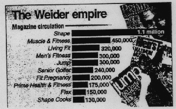

- Determine the mean magazine circulation
for the ``Weider'' empire.
- Determine the median magazine circulation for the ``Weider'' empire.
- Assume you are the press speaker of the ``Smith'' magazine group that also has
10 magazines with a mean circulation of 310,000 and a median circulation of 300,000.
Which number(s) would you report when comparing your group with the ``Weider'' empire.
Explain.
- Calculate the range of the magazine circulation for the ``Weider'' empire.
- Construct a stem-and-leaf display of the magazine circulation.
- Are you happy with the data provided by USA Today? Isn't some
important information missing?
- Do you think that the 1.1 million circulation for ``Shape'' is the
absolute truth? Think of possible manipulations (hint: ``TV Guide'' published
4 collector's covers of Seinfeld in their May 9-15, 1998, issue - how might this
effect the circulation?).
- Assume the
``Weider'' group only possesses these 10 magazines. Calculate
the variance using our shortcut formula
and make a clear statement whether you are calculating a population
or a sample variance. (Hint: It might be useful to know that
1.1 million can be expressed as 1.1E06, 450,000 as 0.45E06, etc.).

- Label the (individual) scatterplot that shows
the `Cable Penetration' on the vertical (y-)axis
and the `Per Capita Income' on the horizontal
(x-)axis with the letter `A'.
- What is the range R of the `Per Capita Income' (in $)?
- Which of these statements is correct/incorrect?
- The state with the highest `Per Capita Income' has a
`Metropolitan Population' of less than 50%.
- The state with the highest `Per Capita Income'
has the second highest `Cable Penetration'.
- The 6 New England states have `Cable Penetrations' that
range among the 15 lowest rates of cable penetration in the U.S.
- California is the state with the highest `Per Capita Income'.
- The state with the highest `Per Capita Income' has a
`Metropolitan Population' of less than 50%.

(7 Points)